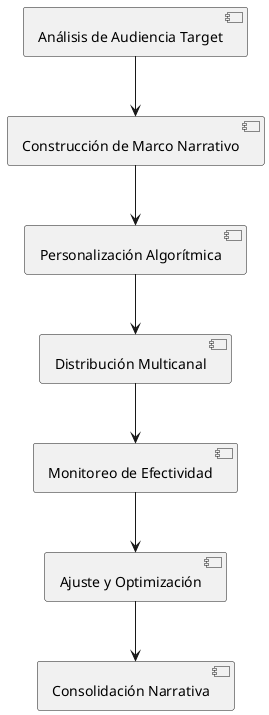

La Gestión de la Narrativa como Arma Política: Un Análisis Crítico del Control Discursivo en el Poder Contemporáneo
La Gestión de la Narrativa como Arma Política: Un Análisis Crítico del Control Discursivo en el Poder Contemporáneo
La gestión de la narrativa política constituye la disciplina estratégica más sofisticada del poder contemporáneo, trascendiendo la propaganda tradicional para convertirse en un sistema integral de construcción y manipulación de la realidad social percibida. Este fenómeno representa la evolución de técnicas de comunicación política hacia metodologías científicas de ingeniería del consenso, donde el control del relato se convierte en el mecanismo fundamental de legitimación y mantenimiento del poder político en sociedades democráticas y autoritarias.
Introducción
Definición Conceptual
Gestión de Narrativa Política
Sistema coordinado de técnicas comunicativas, psicológicas y tecnológicas destinado a construir, mantener y modificar los marcos interpretativos mediante los cuales las sociedades comprenden los eventos políticos, estableciendo los términos del debate público y determinando qué interpretaciones de la realidad resultan socialmente aceptables.
Arma Política
Instrumento estratégico utilizado para obtener, mantener o expandir poder político mediante la alteración de percepciones colectivas, la modificación de comportamientos electorales y la neutralización de oposición política a través del control de los significados socialmente compartidos.
Contexto Histórico y Evolución
La gestión narrativa política ha evolucionado desde las técnicas de propaganda del siglo XX hacia sistemas algorítmicos de personalización masiva que operan en tiempo real. La convergencia de neurociencia cognitiva, análisis de big data y plataformas digitales ha transformado esta práctica de arte intuitivo en ciencia aplicada con capacidades de precisión y escala sin precedentes históricos.
Arquitectura Conceptual de la Gestión Narrativa
Componentes Estructurales
Marco Interpretativo Dominante
Construcción de sistemas de significado que establecen las categorías básicas mediante las cuales los ciudadanos interpretan eventos políticos, determinando qué elementos de la realidad resultan visibles, relevantes o significativos para la toma de decisiones políticas.
Control de Agenda Temática
Determinación de qué asuntos reciben atención pública y con qué intensidad, estableciendo las prioridades del debate político y desplazando temas potencialmente perjudiciales fuera del foco de atención ciudadana.
Gestión de Emociones Colectivas
Manipulación sistemática de estados emocionales poblacionales para facilitar la aceptación de políticas específicas, utilizando técnicas de activación emocional que eluden procesamiento racional crítico.
Metodologías de Implementación
Personalización Algorítmica
Utilización de sistemas de inteligencia artificial para adaptar mensajes políticos a perfiles psicológicos individuales, maximizando la efectividad persuasiva mediante la explotación de sesgos cognitivos específicos de cada receptor.
Construcción de Realidades Paralelas
Creación de ecosistemas informativos segmentados que proporcionan versiones diferenciadas de los mismos eventos, permitiendo que diferentes grupos poblacionales mantengan interpretaciones mutuamente incompatibles de la realidad política.
Ingeniería de Consenso Artificial
Simulación de apoyo popular orgánico mediante técnicas de amplificación artificial, creando impresiones de consenso social que influyen en la formación de opiniones individuales a través de mecanismos de conformidad social.
Objetivos Estratégicos de la Gestión Narrativa
Objetivos de Control Político
Legitimación del Poder
Construcción de narrativas que presenten el ejercicio del poder político como natural, necesario y beneficioso para la sociedad, independientemente de sus efectos empíricos sobre el bienestar ciudadano.
Neutralización de Oposición
Desarrollo de marcos interpretativos que desacrediten sistemáticamente alternativas políticas, presentándolas como peligrosas, irrealistas o moralmente inaceptables sin necesidad de refutación argumentativa.
Mantenimiento de Coaliciones
Creación de identidades colectivas artificiales que unifiquen grupos sociales heterogéneos alrededor de narrativas compartidas, superando divergencias de intereses materiales mediante adhesión emocional a relatos comunes.
Objetivos de Transformación Social
Normalización de Políticas
Modificación gradual de estándares sociales de aceptabilidad para facilitar la implementación de políticas que inicialmente resultarían inaceptables, mediante técnicas de habituación progresiva y desensibilización sistemática.
Reconfiguración de Valores
Alteración de jerarquías valorativas sociales para alinear preferencias ciudadanas con objetivos políticos específicos, utilizando técnicas de refuerzo cultural y modificación de referentes normativos.
Control de Expectativas Futuras
Gestión de anticipaciones colectivas sobre desarrollos políticos futuros para influir en comportamientos presentes, incluyendo decisiones de inversión, planificación familiar y participación política.
Taxonomía de Técnicas Narrativas
| Técnica | Mecanismo Psicológico | Aplicación Política | Efectividad | Detectabilidad |
|---|---|---|---|---|
| Framing Estratégico | Sesgo de Anclaje | Definición de Problemas | Muy Alta | Baja |
| Storytelling Emocional | Procesamiento Heurístico | Identificación Personal | Alta | Muy Baja |
| Repetición Sistemática | Efecto de Ilusión de Verdad | Instalación de Creencias | Muy Alta | Media |
| Asociación Subliminal | Condicionamiento Clásico | Transferencia de Emociones | Media | Muy Baja |
| Falsa Dicotomía | Reducción de Complejidad | Simplificación de Opciones | Alta | Media |
| Apelación a Autoridad | Heurística de Credibilidad | Legitimación de Posiciones | Media | Alta |
| Desplazamiento Temporal | Sesgo de Disponibilidad | Control de Urgencias | Alta | Baja |
Actores del Ecosistema Narrativo
Arquitectos Principales
Consultores Especializados
Profesionales especializados en comunicación política estratégica que desarrollan campañas narrativas integrales, combinando análisis psicológico, investigación de mercados y técnicas de persuasión para crear sistemas de influencia personalizados según objetivos políticos específicos.
Agencias de Inteligencia Narrativa
Organizaciones especializadas en análisis de tendencias discursivas, monitoreo de narrativas competidoras y desarrollo de contrarrativas estratégicas, operando tanto en el sector privado como en estructuras gubernamentales.
Plataformas Tecnológicas
Empresas de tecnología que proporcionan infraestructura para distribución y personalización de contenido narrativo, incluyendo algoritmos de recomendación, sistemas de targeting y herramientas de análisis de engagement.
Ejecutores Operacionales
Influencers Políticos
Personalidades públicas que funcionan como vectores de transmisión narrativa, proporcionando credibilidad y alcance a mensajes políticos específicos mediante la explotación de relaciones parasociales con audiencias segmentadas.
Medios Alineados
Organizaciones mediáticas que operan como amplificadores de narrativas políticas específicas, adaptando contenido editorial para reforzar marcos interpretativos predeterminados mientras mantienen apariencias de independencia periodística.
Redes de Activistas Digitales
Comunidades organizadas de usuarios que distribuyen contenido narrativo a través de redes sociales, creando impresiones de movimientos orgánicos mientras ejecutan estrategias de comunicación centralizadamente coordinadas.
Mecanismos de Efectividad Narrativa
Fundamentos Psicológicos
Explotación de Sesgos Cognitivos
Las narrativas políticas efectivas explotan sistemáticamente limitaciones del procesamiento cognitivo humano, incluyendo sesgos de confirmación, efecto halo, y tendencias de pensamiento grupal que facilitan la aceptación de información coherente con predisposiciones existentes.
Activación de Respuestas Emocionales
La gestión narrativa prioriza la activación emocional sobre la persuasión racional, utilizando técnicas de storytelling que eluden análisis crítico mediante la generación de respuestas viscerales que preceden y condicionan evaluaciones racionales.
Construcción de Identidades Colectivas
Las narrativas políticas más efectivas crean o refuerzan identidades grupales que proporcionan sentido de pertenencia y propósito, convirtiendo posiciones políticas específicas en componentes de identidad personal que resultan psicológicamente costosos de abandonar.
Dinámicas de Propagación
Viralidad Algorítmica
Los sistemas de distribución digital priorizan contenido que genera engagement emocional intenso, creando ventajas estructurales para narrativas diseñadas para provocar reacciones fuertes sobre aquellas que promueven reflexión moderada.
Cascadas de Disponibilidad
La repetición coordinada de narrativas específicas a través de múltiples canales crea impresiones de consenso social que influyen en la formación de opiniones individuales mediante mecanismos de conformidad y prueba social.
Polarización Selectiva
La personalización algorítmica de contenido facilita la creación de cámaras de eco que refuerzan narrativas específicas mientras limitan la exposición a información contradictoria, intensificando adherencia a marcos interpretativos específicos.
Análisis de Impacto Sistémico
Efectos en la Democracia
Erosión de Deliberación Racional
La priorización de técnicas narrativas sobre argumentación basada en evidencia debilita la capacidad de las sociedades democráticas para tomar decisiones colectivas informadas, sustituyendo evaluación crítica de políticas por adhesión emocional a relatos.
Fragmentación de Realidades Compartidas
La personalización extrema de narrativas políticas facilita la coexistencia de interpretaciones mutuamente incompatibles de la misma realidad factual, complicando la formación de consensos democráticos básicos necesarios para la gobernanza efectiva.
Profesionalización de la Manipulación
El desarrollo de capacidades científicas de influencia narrativa crea asimetrías de poder entre actores con acceso a estas tecnologías y ciudadanos ordinarios, potencialmente socavando premisas igualitarias fundamentales de la democracia.
Transformaciones Sociales
Modificación de Comportamientos Colectivos
La gestión narrativa sistemática puede producir cambios significativos en patrones de comportamiento social, incluyendo modificaciones en preferencias de consumo, decisiones reproductivas y niveles de participación cívica.
Reconfiguración de Autoridad Epistémica
El control narrativo permite redefinir qué fuentes de información resultan socialmente creíbles, potencialmente desplazando autoridad tradicional de instituciones académicas y periodísticas hacia fuentes alineadas con objetivos políticos específicos.
Alteración de Cohesión Social
La segmentación extrema de narrativas puede debilitar vínculos sociales básicos al reducir experiencias compartidas y marcos de referencia comunes necesarios para la cooperación social efectiva.
Evaluación de Ganadores y Perdedores
Beneficiarios Estructurales
Élites Políticas con Acceso Tecnológico
Actores políticos con recursos suficientes para acceder a herramientas avanzadas de gestión narrativa obtienen ventajas competitivas significativas sobre oponentes que dependen de métodos tradicionales de comunicación política.
Industria de Consultoría Estratégica
El sector profesional especializado en gestión narrativa experimenta crecimiento exponencial, creando oportunidades económicas para especialistas en comunicación política, análisis de datos y psicología aplicada.
Plataformas de Distribución Digital
Las empresas tecnológicas que controlan canales de distribución de contenido se benefician del incremento en demanda por servicios de targeting y personalización, independientemente del contenido específico distribuido.
Movimientos Políticos Disruptivos
Organizaciones políticas dispuestas a utilizar técnicas narrativas agresivas pueden competir efectivamente contra establecimientos con mayores recursos financieros tradicionales pero menor sofisticación comunicativa.
Perjudicados Sistemáticos
Ciudadanía No Especializada
La población general enfrenta creciente dificultad para distinguir entre información verificada y narrativas construidas, experimentando manipulación sistemática de sus procesos de toma de decisiones políticas.
Instituciones de Verificación Tradicional
Organizaciones académicas, periodísticas y científicas ven erosionada su autoridad epistémica frente a sistemas narrativos que priorizan persuasión sobre precisión factual.
Políticos Comprometidos con Transparencia
Actores políticos que mantienen compromisos con veracidad y transparencia enfrentan desventajas competitivas sistemáticas frente a oponentes dispuestos a utilizar técnicas narrativas sin restricciones éticas.
Procesos Democráticos Deliberativos
Los mecanismos institucionales diseñados para facilitar debate racional y formación de consensos se ven debilitados por la prevalencia de técnicas que priorizan manipulación emocional sobre persuasión argumentativa.
Casos Paradigmáticos de Análisis
Gestión Narrativa en Crisis Sanitarias
La respuesta a la pandemia de COVID-19 ilustra cómo diferentes actores políticos utilizaron técnicas narrativas para construir interpretaciones contrastantes del mismo fenómeno sanitario, demostrando la capacidad de la gestión narrativa para influir en comportamientos con consecuencias directas sobre salud pública.
Narrativas Electorales en Democracias Polarizadas
Los procesos electorales contemporáneos en democracias altamente polarizadas demuestran la aplicación sistemática de técnicas narrativas para segmentar electorados y construir coaliciones basadas en identidades emocionales más que en evaluación de políticas públicas específicas.
Control Narrativo en Sistemas Autoritarios
El uso de gestión narrativa en regímenes autoritarios contemporáneos ilustra cómo estas técnicas pueden utilizarse para mantener legitimidad política sin recurrir exclusivamente a represión directa, creando consensos artificiales que facilitan el ejercicio del poder.
Estrategias de Mitigación y Resistencia
Intervenciones Educativas
Alfabetización Narrativa
Desarrollo de programas educativos que enseñen a identificar técnicas de construcción narrativa, incluyendo análisis de framing, detección de sesgos cognitivos explotados y evaluación crítica de fuentes de información.
Formación en Pensamiento Crítico
Implementación de metodologías educativas que fortalezcan capacidades de análisis racional, evaluación de evidencia y resistencia a técnicas de persuasión emocional, comenzando desde niveles educativos básicos.
Educación Mediática Avanzada
Capacitación ciudadana en comprensión de algoritmos de personalización, reconocimiento de cámaras de eco y técnicas para diversificar fuentes de información de manera deliberada.
Reformas Institucionales
Transparencia Algorítmica
Implementación de marcos regulatorios que requieran transparencia en algoritmos de distribución de contenido, permitiendo auditorías independientes de sistemas que influyen en la formación de opinión pública.
Estándares de Verificación
Desarrollo de protocolos institucionales que distingan entre información verificada y narrativas construidas, creando sistemas de certificación que ayuden a ciudadanos a evaluar credibilidad de fuentes.
Diversificación de Medios
Políticas públicas que promuevan diversidad en ecosistemas mediáticos, evitando concentraciones de poder narrativo que faciliten manipulación sistemática de opinión pública.
Innovaciones Tecnológicas
Herramientas de Detección Narrativa
Desarrollo de aplicaciones que ayuden a usuarios a identificar técnicas de gestión narrativa en tiempo real, incluyendo análisis de sesgos, detección de manipulación emocional y verificación de coherencia factual.
Plataformas de Verificación Ciudadana
Sistemas que faciliten verificación colaborativa de información, permitiendo que comunidades desarrollen capacidades colectivas de resistencia a manipulación narrativa.
Algoritmos de Diversificación
Desarrollo de sistemas de recomendación que prioricen diversidad de perspectivas sobre engagement emocional, contrarrestando tendencias hacia polarización y fragmentación de realidades.
Diagrama de Arquitectura Narrativa

Proyecciones Futuras del Control Narrativo
Escenario de Intensificación Tecnológica
Características Dominantes
Desarrollo de sistemas de inteligencia artificial capaces de generar narrativas personalizadas en tiempo real, adaptándose instantáneamente a respuestas emocionales individuales mediante monitoreo biométrico y análisis de comportamiento digital.
Implicaciones Políticas
Consolidación de ventajas competitivas extremas para actores con acceso a tecnologías narrativas avanzadas, potencialmente eliminando competencia política efectiva y estableciendo formas de dominación basadas en control cognitivo sistemático.
Riesgos Sistémicos
Erosión completa de autonomía cognitiva individual, convirtiendo procesos de toma de decisiones políticas en productos de manipulación externa más que expresiones de preferencias auténticas.
Escenario de Regulación Efectiva
Características Dominantes
Implementación exitosa de marcos regulatorios internacionales que limiten técnicas de manipulación narrativa más agresivas, acompañada de mejoras significativas en educación mediática y transparencia algorítmica.
Implicaciones Políticas
Preservación de espacios de deliberación democrática auténtica mediante el control de excesos en gestión narrativa, manteniendo competencia política legítima basada en evaluación de políticas públicas más que manipulación psicológica.
Beneficios Potenciales
Restauración de confianza en instituciones democráticas mediante el restablecimiento de estándares compartidos de veracidad y transparencia en comunicación política.
Referencias Documentales
- Lakoff, G. (2004). Don't Think of an Elephant! Know Your Values and Frame the Debate. Chelsea Green Publishing.
- Entman, R. M. (1993). Framing: Toward Clarification of a Fractured Paradigm. Journal of Communication, 43(4), 51–58. https://doi.org/10.1111/j.1460-2466.1993.tb01304.x
- Kahneman, D., & Tversky, A. (1979). Prospect Theory: An Analysis of Decision under Risk. Econometrica, 47(2), 263–291. https://doi.org/10.2307/1914185
- Castells, M. (2009). Communication Power. Oxford University Press.
- Pariser, E. (2011). The Filter Bubble: What the Internet Is Hiding from You. Penguin Press.
- Tufekci, Z. (2018). How Social Media Took Us from Tahrir Square to Donald Trump. MIT Technology Review. https://www.technologyreview.com/2018/08/14/140661/how-social-media-took-us-from-tahrir-square-to-donald-trump/
- Herman, E. S., & Chomsky, N. (1988). Manufacturing Consent: The Political Economy of the Mass Media. Pantheon Books.
- Sunstein, C. R. (2017). #Republic: Divided Democracy in the Age of Social Media. Princeton University Press.
- Vaidhyanathan, S. (2018). Antisocial Media: How Facebook Disconnects Us and Undermines Democracy. Oxford University Press.
- World Association for Public Opinion Research. (2020). Global Report on Trust in Media. WAPOR. https://wapor.org/wp-content/uploads/2020/10/Global-Report-on-Trust-in-Media.pdf
- Bennett, W. L., & Livingston, S. (2018). The Disinformation Age: A Revolution in Propaganda. Journal of Democracy, 29(4), 137–148. https://doi.org/10.1353/jod.2018.0069
- Zaller, J. R. (1992). The Nature and Origins of Mass Opinion. Cambridge University Press.